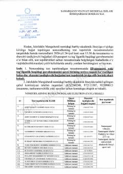

JMJaloliddin Manguberdi nomidagi harbiy-akademik litseyiga kirish imtihoni uchun nomzodlar ro'yxati.
Ushbu hujjat Jaloliddin Manguberdi nomidagi harbiy-akademik litseyiga o'qishga kirish uchun test topshiruvchi nomzodlarning ro'yxati va ularning test topshirish joylari haqidagi ma'lumotlarni o'z ichiga oladi. Hujjatda nomzodlarning shaxsini tasdiqlovchi hujjatlari va test jarayoniga oid tashkiliy ko'rsatmalar keltirilgan.